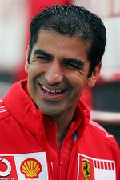

De: La Frikipedia, la enciclopedia extremadamente seria.
De: La Frikipedia, la enciclopedia extremadamente seria. De: La Frikipedia, la enciclopedia extremadamente seria.
| De la serie deportes para todos: | |||
| Carreras de resistencia | |||
| |||
| Número de practicantes | Pilotos de F1 retirados, negados en general y Sebastian Loeb | ||
| ¿Deporte Olímpico? | No, sin duda | ||
| Campeonatos | Campeonato mundial de Resistencia (categorías LMP1, LMP2 y GT) | ||
| ¿Donde se practica? | Europa, Japón y Abu Dhabi | ||
| ¿Control anti-dopping? | No | ||
| Riesgo de muerte | Riesgo de aburrimiento después de 5 horas pegado a la TV | ||
| Árbitro | Hay comisarios de carrera. | ||
| Hinchas | Desde que la [ma]FIA les pegó el palo en los años '90, pocos, pero se van recuperando. | ||
«Lo que la FIA nos da, la [ma]FIA nos lo quita»
~ Yo sobre el Grupo C
«¿Otra copa, monsieur Le Mans?»
~ Un camarero hablando con Jacky Ickx
«¡Me muero mucho, por DIOX!»
~ Johnny Herbert después de ganar las 24 horas de Le Mans
«¡Ostias, un coche!»
~ Pierre Lavegh antes de cargarse a 82 personas
Las Carreras de Resistencia, son una de las formas de correr con coches sin que te multe un poli, es decir, automovilismo. Como su nombre nos indica se trata de dar vueltas a un circuito durante 6 a 24 horas o hasta completar 1000km, para resumir, hasta que el señor director de carrera vaya adormeciendo, en ese caso, se acaba todo y los tres tríos (un coche = tres pilotos) primeros van al podio, al resto los organizadores les dicen que son buenos por aguantar todo el rato y bla bla el circuito es muy duro bla bla solo entran tres en el podio bla bla bla, aunque por dentro estén pensando que dan pena. La principal carrera de resistencia son las 24 horas de Le Mans y la máxima (y única) categoría es el Campeonato mundial de resistencia (LMP1, LMP2 y GT). En este deporte la [ma]FIA ha hecho varias perogrulladas y Ferrari es una de las mejores escuderias (actualmente solo corre en GT pero antes ganó en Le Mans) así que deducimos que este deporte se parece muchísimo a la Fórmula 1, aunque la mejor escudería es Porsche (que ha vuelto en 2014 y ya logró un campeonato y una victoria en Le Mans).
Tiene una historia grandísima porque las primeras carreras de este tipo se hicieron en los años '20 y pasaron muchas cosas.
En 1923 se hicieron las primeras 24h de Lemans, y los ganadores fueron dos franceses y un coche francés y poco después la chispa se corrió por Europa y aparecieron los 1000km de Nürburgring y de Spa, las 500 millas de Indianápolis (anterior a las 24h de Lemans) y más tarde las 24 horas de Daytona, en total, que hay muchas y que había pilotos chalados a los que se les ocurría correr las 24 horas ellos solos, lógicamente ganaban los que corrían por parejas. Cabe destacar que en 1955 un Mercedes, el de Pierre Lavegh tuvo un accidente con el Austin Healey de Lance Macklin y despegó matando a 82 personas más el propio piloto, y os preguntareis ¿Cómo c* * * * * * lo hizo? pues así: Mike Hawthorn, de Jaguar adelantó al Austin Healey y el piloto del Cometa Healey hizo un giro brusco al estilo Hamiltonto y los Mercedes del Chueco y Pierre Lavegh se fueron disparados hacia el inglés y Lavegh chocó contra él por detrás despegando del suelo y yéndose contra las gradas como Mark el aborígen, aunque Lavegh se cayó del coche en pleno vuelo, matándose igual, el coche siguió volando hasta matar a 82 aficionados.
A finales de los '60 apareció una nueva categoría de coches de competición que aunque no eran de producción en serie ni mucho menos, alcanzaban una gran velocidad punta (320km/h). El gran bumm del momento fue el Ford GT40, que ganó 4 24h Lemans seguidas, además de varias carreras importantes, y de barrer en la pista a los Ferrari 330P4 y 330P3. Pero este coche también tuvo su historia particular, es la siguiente: Henry Ford jr. quería comprar Ferrari y después de pulirse pasta en viajes a Italia, Enzo Ferrari le dijo que no, entonces mr.Ford jr. pilló un enfado grandísimo, de esos que solo se curan cuando humillas al que te lo provoca, pues eso hizo, mandó hacer un coche mejor que los Ferrari y el resultado fue el Ford GT40, que ganó lo que puse arriba y un lugar muy grande en la historia de la competición automovilística.
En esta década destacaron Jacky Ickx, Henri Pescarolo, Vic Elford y Graham Hill, el padre de Damon Hill, que fueron los pilotos más laureados en Lemans y Nürburgring. Porsche volvió a triunfar con sus 917K y sus 935, aunque Matra y Ferrari también ganaron en Lemans y Nürburgring y Jacky Ickx triunfó en Spa. También fue la época del Chaparral 2J, el coche lavadora con sus dos ventiladores que pillaba las curvas a una velocidad altísima y le tiraba piedras a los coches de detrás, pero este coche tenía una fiabilidad tan grande como el talento de Buemierdas, y por miedo a que la mejorase, el resto de equipos de la CanAm series lo ilegalizaron, ahí no andaba metida la [ma]FIA pero si McLata-Percebes que argumentó que el parato podía hacer aburrida a la CanAm ganando muchas veces seguidas el torneo (recodemos que McGuarren ganó la CanAm 5 veces seguidas, la mierda en ese equipo viene de lejos)
En 1982 la [ma]FIA metió unas nuevas regulaciones para los Grupo A y B de rallies y Grupo C de Sport Prototipos, el resultado fueron unas máquinas cada vez más rápidas y potentes de 900cv para arriba, los coches principales fueron los Porsche 956 y 962 (Stefan Bellof batió el record de vuelta en el ring), que dominaron hasta el '88 con la aparición de los Chauber-Mercedes C9, Enjuagar XJR-9 y los Poyota 89C-V, este último del campeonato japonés GT, en Lemans '90 el Peugeot WM alcanzó los 407km/h pero nadie hizo caso porque el coche se retiró a las pocas vueltas, el follón vino cuando el Chauber-Mercedes C9 alcanzó los 404km/h y ese si que acabo la carrera ganándola, eso hizo saltar las alarmas en la [ma]FIA porque la resistencia le iba quitando chollo a la F1 y por eso le colocaron 2 chicanes en la recta pentakilométrica Des Hùnadiers o Mulsanne, además de reducir la potencia a 700-800cv, y va 1 perogrullada. En 1991 el Mazda 787B ganó las 24 horas de Lemans con el motor rotativo, un motor con un funcionamiento que no voy a explicar porque no me da la gana porque no viene a cuento. Al parecer este motor era más ligero que los demás y por eso iba contra el espíritu de la norma (vamos, que Mazda no era una marca importante y la [ma]FIA los jodió bien), el resultado fue que Mazda se fue de las carreras, burrada nº2. Luego Peugeot llegó con su 905 y tanto que triunfó durante dos años hasta que Tito Bernie dijo que era mejor que los motores fueran derivados de la F1, la [ma]FIA le hizo caso y se cargó el Grupo C porque los motores de F1 son carísimos, esta es la gran putada nº1 (nº3 de gilipollez), aunque hubo equipos que montaron Grupo Cs descapotables haciendo que parezca un coche legal (queda demostrado que Max Mosley esta ciego o algo parecido). Moraleja: Lo que la FIA nos da, la [ma]FIA nos lo quita.
Aunque la resistencia perdió popularidad por los chanchullos de la [ma]FIA, a esta le salió el tiro por la culata porque hicieron la categoría GT1 y los McLaten F1 GTR, Porsche 911 GT1, Poyota GT-ONE, Mercedes CLK LM, Mercedes CLR y BeMeuVe V12 LMR resultaron ser máquinas casi tan rápidas como las del Grupo C pero no muy fiables excepto el Mercedes CLK LM que no se fostió como el resto, además Nissan y Panoz también estuvieron metidos encizañando nada más con sus R390 y Esperante GTR-1. Ahora mismo el GT1 es una categoría del [ma]FIAGT, más lenta. Por alguna razón sospecho que ciertos diseñadores recalaron Fewari, debido a esa aerodinámica tan buena y efectiva, los ejemplos se pueden poner en una lista muy bonita, he aquí:
Para el año 2000 los coches pasaron a ser LMP1, LMP2 y GT en las Carreras de resistencia, sin duda el mejor fue el Audi R8 LMP, que ganó las LeMans Series y ALMS desde el 2000 hasta 2005 aunque en 2003 fue Bentley (perteneciente a Audi) el ganador con mucha potra merecidamente de las 24 horas de Lemans (que no de Lemans Series, ojo) con su Speed8 LMP.
Para el 2006 Audi desarrolló su R10 TDI, uno de los primeros diésel en Lemans, este coche ganó todo lo que pudo hasta el 2008, que casi pierde las 24h de Lemans, lo salvó la lluvia de un Peugeot 908 que venía tumbando aguja, para el 2009 Peugeot y Marc Yeyé fulminaron a Audi en Lemans y en el campeonato ALMS pero en 2010 y 2011 Audi volvió a ganar con tripletes más un accidente de Allan McNish que se llevó por delante a un Ferrari 458GT y luego se estampó contra el muro en la curva nº4 haciendo lo imposible: sacarle una rueda a un coche con las ruedas cerradas, ya explicará el como lo hizo. Cabe destacar que estos coches suenan a tractores al arrancar.
Aunque el primer híbrido en destacar fue el Courage C60 con motor Judd que usó Loeb (sí, el de los rallys) en 2005 y con el que su compañero quedó 2º en Le Mans, hasta 2012 con la llegada del nuevo mundial de resistencia no hubo coches híbridos compitiendo por nada más que hacer el ridículo en los últimos puestos.
En 2012 Audi y Toyota hicieron sus respectivos cacharros prototipos híbridos-diésel, ganando Audi debido principalmente a las hostias que se metían Anthony Davidson, Kazuki Nakajima y Sébastien Buemi con los Toyota (destacando el abandono doble en Le Mans por el guarrazo impresionante con vuelo incluído de Davidson y la maniobra de novato de Nakajima que al ver que se retiraba el Safety Car tras el golpe de Davidson y los Audi de Tom Kristensen y Marc Yeyé se le escapaban, se metió por donde no había espacio echando de la pista al Nissan DeltaWing -que era un LMP2 muy raro con un eje el doble de ancho que el otro y llevaba el nº 0- y dañando su TS040 que entró y ya no volvió a salir de los boxes). En 2013 se repitió la victoria de Audi que continuó paseandose por los circuitos gracias a la incapacidad de los chicos de Toyota. Porsche entró en 2014 con Mark Webber como fichaje estrella, destacando sus múltiples problemas mecánicos a lo largo de la temporada y su prueba de la consistencia de los muros en la carrera final en Brasil tras comerse a un Ferrari de GT en plena Subida dos Boxes (es irónico porque en 2003, Puto Amo chocó en el mismo sitio tras comerse una rueda del Yegua de Webber), increíblemente, Buemierdas se proclamó campeón del mundo de resistencia esa temporada (compartiendo coche con el amigo de SATO, y Stéphane Sarrazin) aunque la victoria en Le Mans fue para Audi, gracias de nuevo a una hostia de Davidson. La temporada 2015 fue dominada por el Porsche de Mal Huele, que por fin consiguió ganar un campeonato, Brendon Hartley y Timo Bernhard, aunque en Le Mans la marca puso un tercer coche para El increíble Hülk, que ganó la carrera, destacar también que a Nissan se le fue la pinza Nissan participó en Le Mans con un tracción delantera de 1000CV que todavía estaba en fase de pruebas.
Aquí las carreras más importantes de resistencia, como dije, casi todas en Yurop.
Consiste en dar vueltas al Circuit de La Sarthe (de 13km) durante 24 horas y el que haga más vueltas gana. Es una carrera mítica que que Porsche la ganó 16 veces, para no aburrirse, Ferrari y Audi son los 2º con 9 victorias, tampoco se aburren, eh?. Aunque haya campeonato mundial de resistencia sin duda el ganador de esta carrera se hace más famoso que el campeón final, como las 500 millas de Indianápolis, el único ganador aspañol es nuestro Marc Yeyé, que le cambió el diésel por gaseosa a los Audi en 2009. A destacar que en 1998 tres Mercedes CLR despegaron del suelo, uno de ellos, era pilotado por Mark Webber, así que... ¿lo que pasó en Valencia 2010 será casualidad o inutilidad?
Se hace la mayor salvajada conocida, 24horas en el Nordschleife, cuando coincide de noche lloviendo hay que estar más loco que Ralfredo para pilotar allí. En 2011, el productor de Gran Turismo ganó la carrera con un Nissan GT-R privado. Cabe destacar que tu mismo puedes llegar allí con tu Seat 127 y correr la carrera en la categoría que te metan, por eso corren más de 200 coches y salen en tres grupos para que no haya montoneras ni atascos, aunque son inevitables porque el piloto del Lamborghini murciélago GT1 siempre alcanza al del Nissan Micra, por mucho que este último vaya crecidito.
Se corre en el Daytona difícil, es decir, el que lleva chicanes y una sección de curvas lentas, además de las del óvalo, peraltadas a 31º, suelen ganar pilotos americanos pero cada vez hay más europeos. Suelen ganar marcas como Lola o Acura, ya que, a pesar de que antes solía ser la prueba de fuego para Le Mans, actualmente a las marcas del mundial más bien se la suda esta carrera.
Los ganadores reciben una invitación para competir en las 24 horas de Le Mans del año siguiente. Es una carrera en el Road Atlanta (Estados Juntísimos) y que hay que recorrer 1000km, pero si los pilotos son muy inútiles el límite es de 10 horas. En 1998 un Porsche 911 GT1 despegó literalmente y luego se destrozó en el aire, y en 1999 un BMW V12 LMR hizo algo similar pero sin llegar a dar toda la voltereta en el aire.
Otro entrenamiento para Lemans, aquí es donde Marc Yeyé, probó el Peugeot de 2010, ganando, pero perdieron en Le Mans, que es lo que realmente importa, porque el coche aguantaba 8 horas pero no 24. Actualmente esta carrera ya no existe.
Antes se corría en el Nordsheidfeldchleife pero ahora se corre en Nürburgring nuevo. En 1984, Stefan Bellof destrozó el record del Ring haciendo un 6mintuos y medio. Actualmente forma parte del mundial de resistencia y se cambió la denominación de "1000km de Nürbugring" por "6 horas de Nürburgring".
La mejor carrera de Asia, el piloto con más victorias es Stefan Bellof (1983-'84) con su Porsche 956 pero los japos fueron los que más ganaron, lo bueno de esta carrera es que se creó en pleno Grupo C así que Toyota, Nissan y kamikazes japoneses barrieron históricamente.
| Afoto | Descripción |
|---|---|
| Toyota 88C-V (1988-89) |
Érase una vez un coche que tenía tanta potencia, tanta potencia que los pilotos la compactaban y la dejaban en el circuito como obstáculos (al estilo Mario Kart), bueno, pues eso es lo que le pasaba a este bólido de más de 800CV, su otro defecto se podía apreciar en la segunda o la tercera vuelta, momento en el cual el motor de este aparato empezaba a romperse, en la quinta vuelta este defecto ya no era apreciable, debido a que el motor ya estaba roto del todo, de hecho en algunas carreras cuando llegaban a los boxes para aparcar el coche ya ni había motor, sino que sus restos estaban desperdigados por la pista. |
| Mazda 787B (1991) |
Brap, brap, brap, brap, brap, brap, brap, brap, brap, brap, brap, brap, brap, brap, brap, brap, brap, brap, brap, brap, brap, brap, brap, brap, brap, brap, brap, brap, brap, brap, brap, brap, brap, brap, brap...ruuuuuuuuuuuuuuuuuuuuuuuuuuuuuuuuuuuuuuummmm aquí está el único coche asiático en ganar las 24 horas de Las Manos, este coche batió muchos records, como por ejemplo ser el primer coche asiático en ganar en Las Manos, ser el primer coche japonés en ganar en Las Manos, ser el primer coche en ganar con un motor Wankel, ser el primer Mazda en ganar en Los Monos, ser el único coche de colores chillones en la parrilla, etc... |
| Toyota GT-ONE (1998-99) |
En 1998 Poyota volvió a la competición y fabricó esta máquina, después de ver que el coche tenía una eficacia que bien podría ser comparada con la de estos, estos o estos otros, en el 1999 se le cambió todo menos la carrocería (digo TODO porque hasta se le cambió la pintura) y se consiguió hacer una máquina nueva cuya velocidad punta superaba los 400km/h (aunque con las chicanes que ya había por aquel entonces en la Recta des Hunadières eso no les servía de mucho). En las 24 horas de Le Mans de 1999 uno de los Toyota GT-ONE iba liderando hasta que tuvo problemas mecánicos al final y tuvo que dejar pasar al BMW V12 LMR que rodaba 2º con Pierluigi Martini, Yannick Dalmas y el tío de Markus Winkelhock, Joachim. |
| Afoto | Descripción |
|---|---|
| Audi R8 Lemepé (1999-06) |
Este coche ganó las 24 horas de Las Manos desde el 2000 hasta 2005 (en 2003 ganó Bentley, pero el chasis y estas otras cosas eran las mismas), siempre con Tom Kristensen y Frank Biela sentado en su asiento |
| Audi R10 TDI (2006-08) |
En 2006 Audi tuvo una idea que muchos ya habían tenido antes: competir con un diésel en las 24 horas de Los Monos y en Las Manos Series en general, solo que el motor TDI de Audi tira como dios y a los |
 Audi R15+ (2010) |
Visto el fracaso, la derrota, la humillación, el sabor de perder, el fallo de los ingenieros y... bueno, ya me entiendes, del R15 TDI. Audi hizo un nuevo prototipo para poder volver a tirarle champagne al box de Peugeot, el resultado fue bueno, tanto que al año siguiente hubo que hacer el R18 porque Peugeot no ganó también 2010 gracias a la fiabilidad de sus motores, que era tan buena que los cuatro Peugeot reventaron el motor. |
| Audi R18 TDI (2011-12) |
Lo único que yo puedo decir de este coche es que ganó las 24 horas de Las Manos en 2011 y las 6 horas de Spa en 2012 (puedes pensar que estoy loco pero me ví entera esta última). |
| BMW V12 LMR (1999) | Ganó las 24 horas de Las Manos en 1999 |
| Jaguar XJR-9 (1988) |
Un buen día alguien fue a la sede de Jaguar y dijo no hay huevos a participar en Le Mans con un motor atmosférico contra los Porsche Turbo, la cual cosa hizo que en Jaguar se pusieran manos a la obra |
| Peugeot 905 (1991-93) |
Peugeot ganó los rallies en 1986, y como para el '87 la [ma]FIA quitó el Grupo B, en Peugeot reciclaron su 205 T16 EVO II en el 205 T16 GR, que era el mismo coche solo que más alto, con las suspensiones duras como piedras, un parachoques delantero de hierro. Una vez ganado el Dakar, la Marca del León rampante hizo el 905 de Las Manos, el caso es que el coche corría menos que el Life del año anterior, por eso se hizo el 905 EVO I bis. y el 905 EVO I ter. que ganaron en Las Manos sin oposición. |
| Afoto | Descripción |
|---|---|
| Chaparral 2J (1970) | Este coche, que tú lo ves así, feo y extraño, alcanzaba una punta de 390km/h y llevaba un par de |
| Ford GT40 (1966-69) |
Otro coche surgido de una pataleta, en este caso la que se pilló Henry Ford Jr. con Ferrari después de que Enzo se echara atrás en las negociaciones para vender la Scuderia a los yankees. Aunque en las 24 horas de Daytona de 1966 ganó Ferrari, en Le Mans se impusieron estos Ford GT40, y prolongaron su dominio hasta 1969. En 1970 la [ma]FIA decidió que el GT40 era demasiado rápido así que hizo una de las suyas y cambió la reglamentación para que el GT40 (y tampoco el Ferrari 330P4) no pudiese participar. Tras ello Ford |
Porsche 956
| Afoto y nombre | ¿Que hizo tan importante? |
|---|---|
| Jacky Ickx |
Su apodo era monsieur Lemans por ganar 6 veces las 24h (Con Ford, Ferrari y Porsche), pero también ganó en Nurburgring y en Fuji con el Porsche 956. En 1985, en Spa (6 victorias) tuvo un accidente en Eau Rouge con Stefan Bellof, compañero de marca que murió al empotrarse contra el guardarrail de la curva más peligrosa del mundo. También fue piloto de F1 a la vez, nunca ganó el campeonato, pero si un buen hostión en Jarama. Además ganó el París-Dakar de 1982. |
| Tom Kristensen |
También conocido como el puto amo. Kristensen ganó 9 veces las 24 horas de Le Mans (6 de ellas seguidas) con Porsche, Audi y Bentley (Aunque las tres marcas sean propiedad de VolBaguen, pero eso ya tal), también ganó seis veces las 12 horas de Sebring y en 2013 fue campeón del mundo de resistencia. Se retiró a finales de 2014 y actualmente se encuentra en paradero desconocido, se rumorea que Porsche y Toyota lo han secuestrado para evitar que vuelva a las carreras y los siga humillando, otros dicen que se le subió el éxito a la cabeza y se ha hecho entrenador del Copenhage FC con intención de llevarlos a la Final de la Champions. |
| Frank Biela |
Compañero |
|  | Ganó las 24h Lemans en 2009 y los 1000km de Spa dos veces (2007, 2011). Es el único aspañol en ganar estas Carreras de Resistencia, con lo que se puede considerar una leyenda del automovilismo español y mundial. Además de sus éxitos con Peugeot, Marc ha pilotado para Audi como sustituto entre 2012 y 2014, y para Nissan en 2015. A pesar de todo, Marc Yeyé siempre será recordado por lograr un punto |
| Henri Pescarolo |
Henri fue piloto de carreras y barbudo profesional. Ganó 3 veces las 24 horas de Le Mans y ostenta el récord de más participaciones. Ha fundado su propia escudería, que si bien hace diez años pudo hacer frente a los Audi, actualmente se arrastra por el pelotón de la categoría LMP2. |
| Stirling Moss |
Ganó tres veces seguidas los 1000km de Nürburgring pero lo más recordado de este piloto son sus cuatro subcampeonatos de Fórmula Ano consecutivos entre 1955 y 1958. |
| El amigo de SATO es piloto oficial de Poyota en el WEC, destacando por su victoria en el Campeonato de 2014 junto a Buemi y por su acrobacia con voltereta en las 24 horas de Le Mans de 2012 que provocó un Safety Car de más de una hora. Se rumorea que se unió a Toyota cuando se hartó de ser probador de equipos de Fórmula 1, ya que el trabajo viene a ser el mismo solo que si eres el más rápido al menos te dan una copa y no el coche más capado que tengan para que no le hagas sombra a los pilotos oficiales. | |
 |
Después de ser el |
| | |||
|---|---|---|---|
|
Deportes
Deportistas
Competiciones
Otros
Artes Marciales
|
Autor(es):